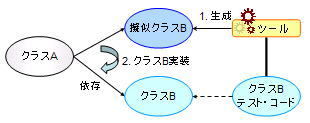
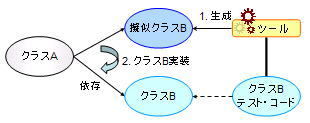

KikainekoMocker
What is KikainekoMocker?
KikainekoMocker is a tool which generates simulated-classes from test codes
under the concept of SCT (Simulated-Class by Tests).
KikainekoMocker reads JUnit Test Cases, and generated
simulated-classes that pass the test.
Simulated-Classes and SCT
When developing classes that has dependency with unimplemented classes
or the environment, it is common to use "Simulated-Classes".
"Simulated-Classes" are "classes that behave in the same way as the real
class, but the implementation is not correct"
(also known as mocks, stubs, or drivers).
With the use of simulated-classes, development and testing of
such classes is performed.
Though the use of simulated-classes is effective, it is difficult to develop the simulated-class itself, and it takes work. To deal with this problem, many simulated-class generation tools are provided, but the tools themselves have the following problems.

For example, as seen in the diagram above, when class A has dependency with class B, and class B is unimplemented at the time of implementation or testing of class A, it is common to apply simulated-classes. The use of simulated-class generation tools to reduce workload of creating such classes can be presumued. But conventionally, there is a need to use the original API provided by the tool to define the simulated-class.
In addition, the definition code for the simulated-class is not used for other than to generating the class, so the definition code is thrown away after the simulation-class has been replaced with the real one. Therefore, excess cost is payed to create simulated-classes.
SCT is a concept where the test code for a class is interpreted as the defintion of I/O for the class itself, and simulated-classes are generated from such definition codes, namely the test codes.
Information of external behavior of a class is include in test codes. SCT uses this information and generates simulated-classes.
As shown in the diagram below, since SCT apprehends the test code as the definition code for the simulated-class, there is no need for learning the tool's own unique API. Also, when the simulated-class is replace with the real class, the definition code itself is the code for testing, and is not thrown away. Therefore, the test code is effectively used.

KikainekoMocker reads JUnit test codes and generates simulated-classes, under the concept of SCT. By using the commonly used xUnit testing framework, creating test codes are relatively simple, and it is posible to intuitively define simulated-classes. With JUnit, which is highly recognized, as the definition code, cost of studying the definition code for the simulated-class can be reduced.
KikainekoMocker is a tool that implements the concept of SCT. By analyzing JUnit test codes, simulated-classes that pass the test code are generated.
Though the use of simulated-classes is effective, it is difficult to develop the simulated-class itself, and it takes work. To deal with this problem, many simulated-class generation tools are provided, but the tools themselves have the following problems.
- It is difficult to define the simulated-class (Use of the tool's own unique API)
- At the end, the definition code for the simulated-class is thrown away
For example, as seen in the diagram above, when class A has dependency with class B, and class B is unimplemented at the time of implementation or testing of class A, it is common to apply simulated-classes. The use of simulated-class generation tools to reduce workload of creating such classes can be presumued. But conventionally, there is a need to use the original API provided by the tool to define the simulated-class.
In addition, the definition code for the simulated-class is not used for other than to generating the class, so the definition code is thrown away after the simulation-class has been replaced with the real one. Therefore, excess cost is payed to create simulated-classes.
SCT is a concept where the test code for a class is interpreted as the defintion of I/O for the class itself, and simulated-classes are generated from such definition codes, namely the test codes.
Information of external behavior of a class is include in test codes. SCT uses this information and generates simulated-classes.
As shown in the diagram below, since SCT apprehends the test code as the definition code for the simulated-class, there is no need for learning the tool's own unique API. Also, when the simulated-class is replace with the real class, the definition code itself is the code for testing, and is not thrown away. Therefore, the test code is effectively used.

KikainekoMocker reads JUnit test codes and generates simulated-classes, under the concept of SCT. By using the commonly used xUnit testing framework, creating test codes are relatively simple, and it is posible to intuitively define simulated-classes. With JUnit, which is highly recognized, as the definition code, cost of studying the definition code for the simulated-class can be reduced.
KikainekoMocker is a tool that implements the concept of SCT. By analyzing JUnit test codes, simulated-classes that pass the test code are generated.